La notion de boucle est fondamentale en informatique. Une boucle permet d'exécuter plusieurs fois des instructions qui ne sont présentes qu'une seule fois dans le code.
La structure de la boucle conditionnelle est la suivante :
Tant que l'expression s'évalue à True, les instructions à l'intérieur du bloc (partie indentée) seront exécutées.
La boucle non conditionnelle permet de répéter n fois, n étant connu, une instruction ou un bloc d’instructions. Sa syntaxe est la suivante :
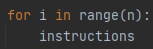Ce code peut être remplacé par le code :
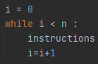Voici un script :

Quelle est la valeur finale de x ?
Voici un script :
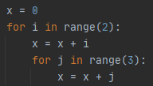Quelle est la valeur finale de x ?
Soit le programme suivant :
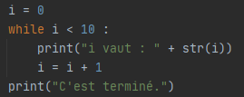Quel est le résultat attendu après l'exécution de ce programme ? Vérifiez votre réponse en testant le programme.
Créez "un générateur automatique de punition".
Écrire une fonction qui prendra 2 paramètres : une chaîne de caractère et un nombre entier
Par exemple :
Si on passe comme paramètres à notre fonction : "Je ne dois pas discuter en classe" et 3, la fonction devra permettre d'afficher :
Je ne dois pas discuter en classe
Je ne dois pas discuter en classe
Je ne dois pas discuter en classe
Écrire une fonction permettant d'afficher une table de multiplication. Cette fonction devra prendre en paramètre la table désirée.
Ecrire une fonction qui prend en argument un entier positif et renvoie son nombre de chiffres.
Ecrire une fonction qui prend en argument un entier naturel en base 10 et qui renvoie l’écriture de cet entier en base 2.
Ecrire une fonction qui prend en argument un nombre écrit en base 2 et qui renvoie l’écriture de cet entier en base 10.
Python propose un certain nombre d’instructions primitives comme print et input .
Le langage contient également de bibliothèques qui apportent des collections d’instructions plus spécialisées qui permettent d’effectuer de nouvelles taches.
Par exemple, il existe une bibliothèque random donnant accès à différentes instructions produisant des nombres aléatoires. Elle offre en particulier une instruction randint pouvant être utilisée sous la forme random.randint(1,6) pour tir au hasard un nombre entier entre 1 et 6 inclus ou encore une instruction random pouvant être utilisée sous la forme random.random() pour tirer au hasard un nombre décimal entre 0 inclus et 1 exclu.
L’utilisation de telles instructions nécessite la déclaration préalable, faite en début de programme : import random
On peut aussi spécifiquement charger une ou plusieurs instructions de la façon suivante : from random import randint
On appellera alors randint de la façon suivante : randint(1,6)
Créer un programme qui permette de jouer au jeu « devine le nombre ».
L’ordinateur choisit un nombre mystère, puis l’utilisateur propose à chaque tour un nombre jusqu’à ce qu’il trouve le nombre mystère. L’ordinateur lui répond « C’est plus », « C’est moins » ou « Gagné ».
L’instruction break est une instruction spéciale qui ne peut être écrite que dans une boucle. Elle provoque l’arrêt immédiat de la boucle.
Ecrire un programme qui demande à l’utilisateur d’entrer un nombre positif jusqu’à ce qu’il en entre un.
Attention : le compteur d’une boucle for existe toujours après l’exécution de la boucle en Python.
Ce n’est pas vrai dans tous les langages.
On recommande de ne plus utiliser cette variable après la boucle, sauf comme compteur d’une autre boucle.
Terminaison et méthode du variant dans une boucle while:
L’arrêt des itérations d’une boucle while étant conditionné à un échec, elles peuvent se poursuivre indéfiniment si la condition est toujours vérifiée.
On parle alors de divergence, de non terminaison, d’un programme qui boucle ou encore d’un programme qui part en boucle infinie.
Cela peut être obtenu de manière volontaire ou être causé par des erreurs de programmation.
Pour éviter ce dernier cas, il devient utile de réfléchir à la terminaison du programme en s’assurant que les conditions menant à l’arrêt de la boucle finiront par être vérifiées.
Soit le programme suivant :
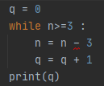Justifier que ce programme termine.
La technique de raisonnement utilisée au-dessus s’appelle la technique du variant.
Elle consiste à trouver parmi les éléments du programme une quantité qui est entière et positive et qui décroit strictement à chaque tour de boucle, qu’on appelle le variant de boucle.
On prétend que chacun des deux programmes suivants, après avoir demandé deux nombres entiers positifs a et b à l’utilisateur, effectue la multiplication de a par b.
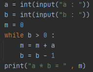 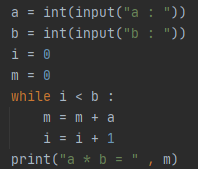Ces programmes terminent-ils ? Identifier pour chacun un variant de boucle.
On prétend que chacun des deux programmes suivants calcule le nombre de chiffres d’un nombre positif saisi par l’utilisateur.
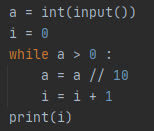Justifier qu’ils terminent avec la technique du variant.
Que se passe-t-il si on remplace a > 0 par a != 0 dans le premier programme ?
Et si on remplace k < a + 1 par k != a + 1 dans le deuxième ?
Soit le programme suivant :
Quel est le résultat attendu après l'exécution de ce programme ?
Vérifiez votre réponse en testant le programme
Ecrire une fonction element_commun qui prend en argument deux tableaux t1 et t2 et qui renvoie True si t1 et t2 ont un élément commun et False sinon.
Ecrire une fonction doublon qui prend en argument un tableau t et qui renvoie True si un élément est présent plus d’une fois dans t.
Ecrire un programme qui affiche des tables de multiplication sous la forme :
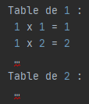Ecrire un programme qui demande deux entiers h et l à l’utilisateur et affiche des symboles # disposés en rectangle de hauteur h et de largeur l.
Ecrire des programmes qui demandent un entier n à l’utilisateur et affichent chacun l’une des figures suivantes (dans un carré de côté n) :
a) En utilisant trois boucles imbriquées, afficher tous les triplets d’entiers 1≤a≤b≤c≤100 tels que a^2+b^2=c^2 (dits triplets pythagoriciens).
b) Modifier le programme pour qu’il renvoie le nombre de triplets.
Pour calculer les nombres premiers plus petits qu’une certaine limite N qu’on se fixe, il existe un algorithme appelé crible d’Eratosthène.
On se donne un tableau t de N booléens, initialement tous égaux à True, sauf t[0] et t[1] qui valent False.
Puis on parcourt ce tableau dans le sens des indices croissants.
Pour chaque indice i, il y a deux cas de figure :
• Si t[i] vaut False, alors le nombre i n’est pas premier et il n’y a rien à faire.
• Si t[i] vaut True, alors le nombre i est premier et on met à False toutes les cases du tableau dont l’indice est un multiple de i, c’est-à-dire 2 * i, 3 * i, …
Ecrire un programme qui réalise cet algorithme et affiche tous les nombres premiers plus petits que 100. On doit en trouver 25.
a) Pour chacun des programmes précédents, donner le nombre de lignes affichées.
b) Par combien ce nombre de lignes est multiplié lorsqu’on multiplie n par 10 ?
A retenir :
En informatique, la question de la performance des programmes est centrale.
D’une manière générale, le traitement d’un volume de données requiert un temps d’exécution lié à ce volume de données.
On s’attache rarement à la détermination exacte de ce temps, une estimation suffit pour se convaincre de l’efficacité du programme.
Par exemple, si en doublant un volume n de données, un programme renvoie une réponse avec un temps d’exécution multiplié par deux et un autre programme renvoie une réponse au même problème avec un temps d’exécution multiplié par quatre, on peut raisonnablement penser que le premier programme est plus performant.
On dit que sa complexité temporelle est meilleure.
Il est ainsi possible de cataloguer les programmes qui résolvent un même problème en termes de complexité temporelle, c’est-à-dire une estimation de la performance en fonction du volume de données à traiter.
On peut également s’intéresser à l’espace mémoire occupé au cours de l’exécution d’un programme que l’on appelle complexité spatiale. Plus cette complexité est grande, plus le programme a besoin de zone mémoires pour stocker les données.
Les instructions d’un programme s’exécutent à très grande vitesse, si bien que le résultat donne parfois l’impression d’être obtenu instantanément. On ne fait pas toujours de différences entre un programme qui s’exécute en 0,01 millisecondes et un autre en 10 millisecondes.
Cependant, si le nombre d’instructions exécuté est grand, le temps nécessaire à l’exécution d’un programme pourra devenir conséquent.
Pour connaître avec plus de précision le temps d’exécution d’un programme, on peut utiliser dans le langage Python les instructions suivantes :
Le temps sera donné en millisecondes.
Pour chacun des programmes suivants, mesurer le temps d’exécution du programme suivant avec différentes valeurs de n et tracer la courbe du temps en fonction de n.
Recommencer l’expérience avec d’autres opérations arithmétiques dans le corps de la boucle, puis avec plus de boucles, imbriquées ou non.
Voici deux fonctions qui prennent en paramètre deux tableaux de nombres et qui renvoient un nombre.
Expliquer pourquoi ces deux fonctions, appliquées aux mêmes paramètres, produisent le même résultat.
Quelle est la différence entre les deux ?
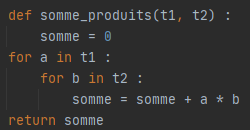 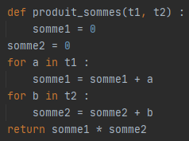